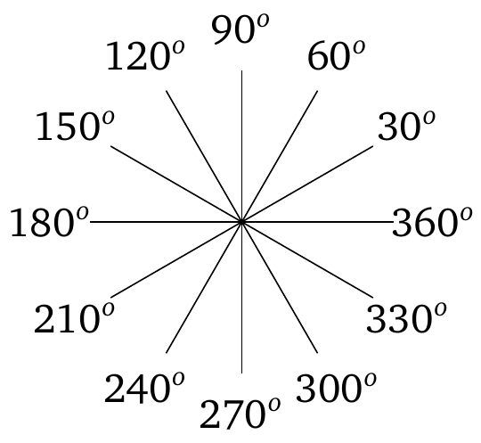
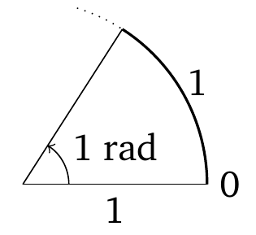
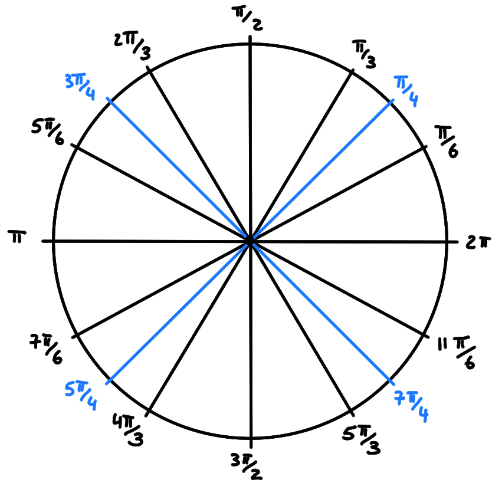
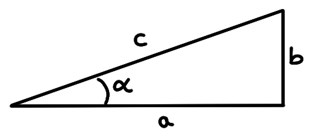
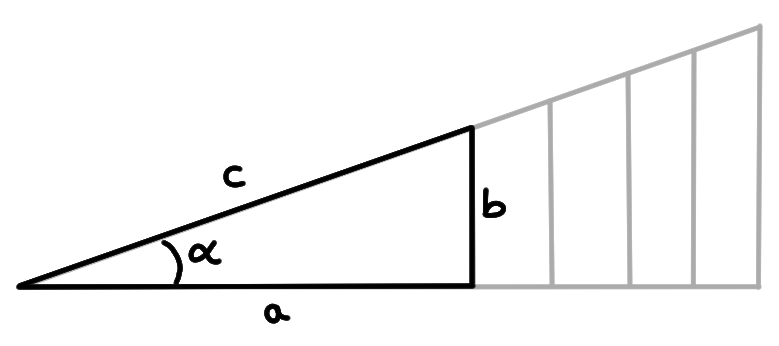
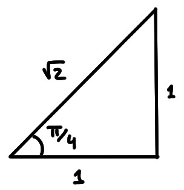
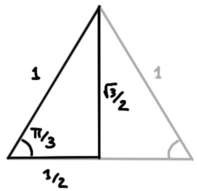
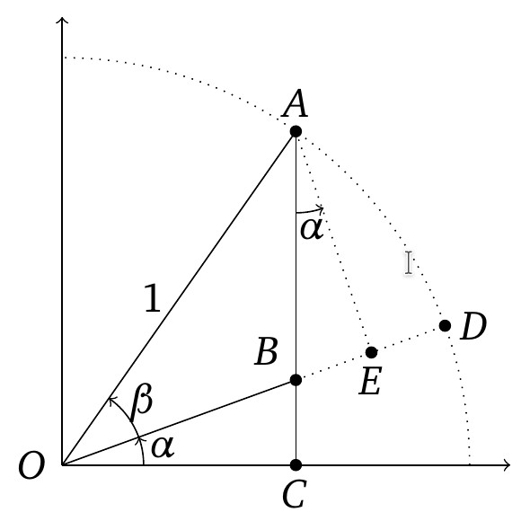

On rappelle ici les définitions et propriétés des
principales fonctions trigonométriques.
Rappelons d'abord comment sont mesurés les angles dans le plan.
Sur la mesure des angles
La mesure des angles se fait par un choix d'unités, et ce choix est déterminé
une fois que l'on fixe la valeur de la mesure de l'angle
total (ouverture correspondant à ''un tour complet'').
La mesure en degrés consiste à associer à l'angle total une mesure
de \(360\) degrés, les autres angles étant mesurés de façon proportionnelle:

La mesure en radians est plus naturelle d'un point de vue
géométrique, puisqu'elle
consiste à mesurer une longueur le long d'un arc de cercle. Si la
longueur parcourue est égale au rayon, ceci définit un angle de
un radian:

L'angle total correspond donc à la longueur de la circonférence d'un cercle de
rayon \(1\), à savoir \(2\pi\).
Quelques angles intermédiaires:

Soit un angle donné, dont la mesure en degrés est \(\alpha_d\) et celle en
radians est \(\alpha_r\). Puisque
\[
\frac{\alpha_d}{360}=\frac{\alpha_r}{2\pi}\,,
\]
on a la formule de conversion:
\[
\alpha_d=\frac{180}{\pi}\alpha_r\,.
\]
Donnons en passant l'expression de l'aire \(A\) d'un secteur
circulaire de rayon \(r\), dont l'ouverture est un angle de \(\theta\)
radians:
Dans le cas où l'angle est total \(\theta=2\pi\), ce secteur est un
disque, et donc son aire est égale à \(\pi r^2\).
Or pour un secteur quelconque,
la proportionnalité existant entre l'angle \(\theta\) et l'angle total doit
être la même que la proportionnalité existant entre l'aire \(A\) du secteur et celle
du disque:
\[ \frac{\theta}{2\pi}=\frac{A}{\pi r^2}\,.
\]
On a donc
\[
\boxed{
A=\tfrac12 r^2\theta
}
\]
Définitions des fonctions trigonométriques
Considérons un triangle rectangle, et distinguons un de ses angles non droit,
que l'on notera \(\alpha\):

Le côté \(a\) est le cathète adjacent à \(\alpha\),
le côté \(b\) est le cathète opposé à \(\alpha\),
et \(c\) est l'hypothénuse.
Pour l'instant, \(\alpha\in ]0,\frac{\pi}{2}[\).
On associe trois nombres à \(\alpha\), représentant chacun un rapport
entre une paire de côtés:
Le sinus de \(\alpha\) est défini par
\[
\sin(\alpha):=\frac{b}{c}\,.
\]
Le cosinus de \(\alpha\) est défini par
\[
\cos(\alpha):=\frac{a}{c}\,.
\]
La tangente de \(\alpha\) est définie par
\[
\tan(\alpha):=\frac{b}{a}\,.
\]
Remarquons que l'on a toujours
\[\tan(\alpha)=\frac{b}{a}=\frac{b/c}{a/c}=\frac{\sin(\alpha)}{\cos(\alpha)}\,.
\]
Il est important de souligner que les nombres
\(\sin(\alpha)\), \(\cos(\alpha)\),
\(\tan(\alpha)\) sont définis comme étant des
proportions dans le rectangle considéré; ils ne dépendant donc pas du
choix particulier fait pour le rectangle. N'importe quel autre triangle
semblable peut être utilisé:

Valeurs remarquables
Si les nombres \(\sin(\alpha), \cos(\alpha),\tan(\alpha)\) sont géométriquement
bien définis,
il n'est pas pour autant facile de les calculer.
Il existe pourtant certains angles, appelés remarquables, qui sont des
parties rationnelles de \(2\pi\), pour lesquels
ces nombres peuvent être calculés exactement.
Commençons par les plus simples.
Considérons \(\alpha=\frac{\pi}{4}\), que l'on peut représenter dans un
triangle rectangle
dont les deux cathètes sont de longueurs \(1\), ce qui implique que son
hypothénuse a pour longueur \(\sqrt{1^2+1^2}=\sqrt{2}\):

Ceci implique
\[\begin{aligned}
\sin(\tfrac{\pi}{4})&=\frac{1}{\sqrt{2}}=\frac{\sqrt{2}}{2}\\
\cos(\tfrac{\pi}{4})&=\frac{1}{\sqrt{2}}=\frac{\sqrt{2}}{2}\\
\tan(\tfrac{\pi}{4})&=\frac{1}{1}=1\,.
\end{aligned}\]
Considérons ensuite \(\alpha=\frac{\pi}{3}\), que l'on peut représenter comme
un triangle rectangle égale à une moitié d'un triangle équilatéral de côté
\(1\) (dont les trois angles sont égaux à \(\frac{\pi}{3}\)):

Par Pythagore, le cathète opposé a longueur
\(l=\sqrt{1^2-(\frac12)^2}=\frac{\sqrt{3}}{2}\).
On en déduit:
\[\begin{aligned}
\sin(\tfrac{\pi}{3})&=\frac{\sqrt{3}/2}{1}=\frac{\sqrt{3}}{2}\\
\cos(\tfrac{\pi}{3})&=\frac{1/2}{1}=\frac{1}{2}\\
\tan(\tfrac{\pi}{3})&=\frac{\sqrt{3}/2}{1/2}=\sqrt{3}\,.
\end{aligned}\]
Remarquons que l'autre angle non-droit de ce triangle vaut \(\frac{\pi}{6}\), et
donc on a aussi
\[\begin{aligned}
\sin(\tfrac{\pi}{6})&=\frac{1/2}{1}=\frac{1}{2}\\
\cos(\tfrac{\pi}{6})&=\frac{\sqrt{3}/2}{1}=\frac{\sqrt{3}}{2}\\
\tan(\tfrac{\pi}{6})&=\frac{1/2}{\sqrt{3}/2}=\frac{1}{\sqrt{3}}\,.
\end{aligned}\]
Cercle trigonométrique et extension à tout \(\mathbb{R}\)
Nous l'avons dit plus haut, ce qui définit les fonctions trigonométriques sont
des proportions (ici: des quotients de longueurs);
elles ne dépendent pas du
triangle utilisé pour les définir. On peut donc choisir de
toujours les définir à partir d'un triangle dont l'hypothénuse est de longueur
égale à \(1\).
Or un triangle dont l'hypothénuse est de longueur \(1\) peut être placé dans le
plan cartésien, avec l'angle à l'origine,
le cathète adjacent le long de l'axe \(Ox\).
Son sommet , noté \(P\) sur l'image ci-dessous, est donc placé
sur le cercle de rayon \(1\)
centré à l'origine, appelé cercle trigonométrique.
Les trois nombres \(\sin(\alpha)\), \(\cos(\alpha)\) et \(\tan(\alpha)\) peuvent
alors être vus comme des longueurs (sur l'animation, faire varier
\(\alpha\) en déplaçant \(P\)):
L'utilisation du cercle trigonométrique permet de
généraliser naturellement ces fonctions, en les définissant
pour un angle quelconque \(\alpha\in\mathbb{R}\) (à part la tangente,
définie pour tout angle qui n'est pas de la forme \(\frac{\pi}{2}+k\pi\), \(k\in
\mathbb{Z}\)).
Graphes
Graphe de la fonction \(\sin:\mathbb{R}\to [-1,1]\):
Graphe de la fonction \(\cos:\mathbb{R}\to [-1,1]\):
Graphe de la fonction
\(\tan:\mathbb{R}\setminus \{\frac{\pi}{2}+k\pi,k\in\mathbb{Z}\}\to [-1,1]\):
Propriétés
La définition géométrique des fonctions trigonométriques (sur le cercle
trigonométrique)
permet d'obtenir facilement leurs principales propriétés élémentaires. Par exemple,
\[\begin{aligned}
\sin(-\alpha)&=-\sin(\alpha)\\
\cos(-\alpha)&=\cos(\alpha)\\
\tan(-\alpha)&=-\tan(\alpha)
\end{aligned}\]
Aussi, sous la transformation \(\alpha\mapsto \alpha+2\pi\), ces fonctions sont
inchangées:
\[
\sin(\alpha+2\pi)=\sin(\alpha)\,,\qquad
\cos(\alpha+2\pi)=\cos(\alpha)\,.
\]
On dit que sinus et cosinus sont périodiques,
de période \(2\pi\).
\[
\tan(\alpha+\pi)=\tan(\alpha)\,\qquad
\]
pour des angles plus petits?
Sous la transformation \(\alpha\mapsto \alpha+\pi\):
\[\begin{aligned}
\sin(\alpha+\pi)&=-\sin(\alpha)\\
\cos(\alpha+\pi)&=-\cos(\alpha)\\
\tan(\alpha+\pi)&=\tan(\alpha)\,.
\end{aligned}\]
Sous la transformation \(\alpha\mapsto \alpha+\frac{\pi}{2}\):
\[\begin{aligned}
\sin(\alpha+\tfrac{\pi}{2})&=\cos(\alpha)\\
\cos(\alpha+\tfrac{\pi}{2})&=-\sin(\alpha)\\
\tan(\alpha+\tfrac{\pi}{2})&=\frac{-1}{\tan(\alpha)}\,.
\end{aligned}\]
Sous la transformation \(\alpha\mapsto \frac{\pi}{2}-\alpha\):
\[\begin{aligned}
\sin(\tfrac{\pi}{2}-\alpha)&=\cos(\alpha)\\
\cos(\tfrac{\pi}{2}-\alpha)&=\sin(\alpha)\\
\tan(\tfrac{\pi}{2}-\alpha)&=\frac{1}{\tan(\alpha)}\,.
\end{aligned}\]
Identités trigonométriques
Par le Théorème de Pythagore (dans le cercle trigonométrique), on obtient
l'identité fondamentale
\[ \sin^2(\alpha)+\cos^2(\alpha)=1\,.
\]
Passons aux identités fondamentales concernant les sommes d'angles:
Théorème:
Pour tous \(\alpha,\beta\in\mathbb{R}\),
\[\begin{aligned}
\sin(\alpha+\beta)&=\sin(\alpha)\cos(\beta)+\sin(\beta)\cos(\alpha)\\
\cos(\alpha+\beta)&=\cos(\alpha)\cos(\beta)-\sin(\alpha)\sin(\beta)\\
\tan(\alpha+\beta)&=\frac{\tan(\alpha)+\tan(\beta)}{
1-\tan(\alpha)\tan(\beta)}\,.
\end{aligned}\]
Pour simplifier, supposons que \(0\lt \alpha,\beta\lt \frac{\pi}{4}\), et
plaçons l'angle \(\alpha+\beta\) sur le cercle trigonométrique:

(Remarquons que l'angle \(\alpha\) se retrouve en \(A\),
puisque \(AE\perp OD\) et \(AC\perp OC\).)
Avec les points représentés sur cette image,
\[\sin(\alpha+\beta)=AC=AB+BC\,.\]
On remarque que
Dans le triangle \(OAE\), où \(E\) est le projeté orthogonal de \(A\) sur
\(OD\),
\(OE=\cos(\beta)\), \(AE=\sin(\beta)\).
Dans le triangle \(ABE\),
\(AE=AB\cos(\alpha)\), \(BE=AB\sin(\alpha)\).
Dans le triangle \(OBC\), \(BC=OB\sin(\alpha)\).
On a donc:
\[\begin{aligned}
\sin(\alpha+\beta)&=AB+BC\\
&=AB+OB\sin(\alpha)\\
&=AB+(OE-BE)\sin(\alpha)\\
&=AB+(\cos(\beta)-AB\sin(\alpha))\sin(\alpha)\\
&=AB(1-\sin^2(\alpha))+\sin(\alpha)\cos(\beta)\\
&=AB\cos^2(\alpha)+\sin(\alpha)\cos(\beta)\,.
\end{aligned}\]
Mais puisque
\[
AB=\frac{AE}{\cos(\alpha)}=\frac{\sin(\beta)}{\cos(\alpha)}\,,
\]
on a bien que
\[\begin{aligned}
\sin(\alpha+\beta)
&=\frac{\sin(\beta)}{\cos(\alpha)}\cos^2(\alpha)+\sin(\alpha)\cos(\beta)\\
&=\sin(\beta)\cos(\beta)+\sin(\alpha)\cos(\beta)\,,
\end{aligned}\]
ce qui démontre la première identité.
Pour la deuxième, on peut utiliser \(\sin(\theta+\frac{\pi}{2})=\cos(\theta)\)
et la première identité, en écrivant
\[\begin{aligned}
\cos(\alpha+\beta)
&=\sin((\alpha+\beta)+\tfrac{\pi}{2})\\
&=\sin(\alpha+(\beta+\tfrac{\pi}{2}))\\
&=\sin(\alpha)\cos(\beta+\tfrac{\pi}{2})+\sin(\beta+\tfrac{\pi}{2})\cos(\alpha)\\
&=\sin(\alpha)(-\sin(\beta))+\cos(\beta)\cos(\alpha)\\
&=\cos(\alpha)\cos(\beta)-\sin(\alpha)\sin(\beta)\,.
\end{aligned}\]
La troisième identité découle des deux premières puisque
\[\begin{aligned}
\tan(\alpha+\beta)
&=\frac{\sin(\alpha+\beta)}{\cos(\alpha+\beta)}\\
&=\frac{\sin(\beta)\cos(\beta)
+\sin(\alpha)\cos(\beta)}{\cos(\alpha)\cos(\beta)-\sin(\alpha)\sin(\beta)}\\
&=
\frac{\bcancel{\cos(\alpha)\cos(\beta)}\bigl(\frac{\sin(\alpha)}{\cos(\alpha)}
+\frac{\sin(\beta)}{\cos(\beta)}\bigr)}{\bcancel{\cos(\alpha)\cos(\beta)}\Bigl(
1-\frac{\sin(\alpha)}{\cos(\alpha)}\frac{\sin(\beta)}{\cos(\beta)}
\Bigr)}\\
&=
\frac{\tan(\alpha)+\tan(\beta)}{1-\tan(\alpha)\tan(\beta)}\,.
\end{aligned}\]
Comme conséquence, des formules très utiles dans la pratique:
Pour tout \(\alpha\in \mathbb{R}\),
\[\begin{aligned}
\sin(2\alpha)&=2\sin(\alpha)\cos(\alpha)\\
\cos(2\alpha)&=\cos^2(\alpha)-\sin^2(\alpha)=2\cos^2(\alpha)-1=1-2\sin^2(\alpha)\\
\tan(2\alpha)&=\frac{2\tan(\alpha)}{1-\tan^2(\alpha)}
\end{aligned}\]
Les formules ci-dessus permettent de trouver des formules exactes pour des
angles plus compliqués que les quelques angles remarquables mentionnés plus
haut. En effet, si on sait par exemple que \(\cos(\frac{\alpha}{2})\geqslant 0\), et
qu'on connaît \(\cos(\alpha)\), on peut utiliser la formule ci-dessus comme
suit:
\[
\cos(\tfrac{\alpha}{2})=+\sqrt{\frac{1+\cos(\alpha)}{2}}\,.
\]
Exemple:
Puisque \(0\lt \frac{\pi}{8}\lt \frac{\pi}{2}\), on a
\(\cos(\frac{\pi}{8})\gt 0\), et donc en posant
\(\alpha=\frac{\pi}{4}\),
\[\begin{aligned}
\cos(\tfrac{\pi}{8})
&=\cos(\tfrac{\alpha}{2})\\
&=\sqrt{\frac{1+\cos(\alpha)}{2}}\\
&=\sqrt{\frac{1+\tfrac{\sqrt{2}}{2}}{2}}\\
&=\frac{\sqrt{2+\sqrt{2}}}{2}\,,
\end{aligned}\]
et donc
\[
\sin(\tfrac{\pi}{8})=+\sqrt{1-\cos^2(\tfrac{\pi}{8})}=\frac{\sqrt{2-\sqrt{2}}}{2}\,,
\]
\[
\tan(\tfrac{\pi}{8})=\frac{\sqrt{2-\sqrt{2}}}{\sqrt{2+\sqrt{2}}}\,.
\]
L'exemple ci-dessus montre que l'on peut, a priori, calculer les
valeurs exactes des fonctions trigonométriques pour tous les angles de la forme
\(\frac{\pi}{2^n}\).
Pour tous \(x,y\in\mathbb{R}\),
\[\begin{aligned}
\sin(x)+\sin(y)&=2\sin\bigl(\frac{x+y}{2}\bigr)\cos\bigl(\frac{x-y}{2}\bigr)\\
\sin(x)-\sin(y)&=2\sin\bigl(\frac{x-y}{2}\bigr)\cos\bigl(\frac{x+y}{2}\bigr)\\
\cos(x)+\cos(y)&=2\cos\bigl(\frac{x+y}{2}\bigr)\cos\bigl(\frac{x-y}{2}\bigr)\\
\cos(x)-\cos(y)&=-2\sin\bigl(\frac{x+y}{2}\bigr)\sin\bigl(\frac{x-y}{2}\bigr)
\end{aligned}\]
Montrons la première identité. En utilisant la formule du dessus,
on développe les termes du membre de droite,
\[\begin{aligned}
\sin\bigl(\frac{x+y}{2}\bigr)
&=\sin(\tfrac{x}{2})\cos(\tfrac{y}{2})
+\cos(\tfrac{x}{2})\sin(\tfrac{y}{2})\\
\cos\bigl(\frac{x-y}{2}\bigr)
&=\cos(\tfrac{x}{2})\cos(\tfrac{y}{2})-\sin(\tfrac{x}{2})\sin(\tfrac{y}{2})\,.
\end{aligned}\]
En multipliant ces deux lignes, un calcul sans difficulté mène à
\[
\sin\bigl(\frac{x+y}{2}\bigr)\cos\bigl(\frac{x-y}{2}\bigr)
=\frac12\bigl(\sin(x)+\sin(y)\bigr)\,.
\]